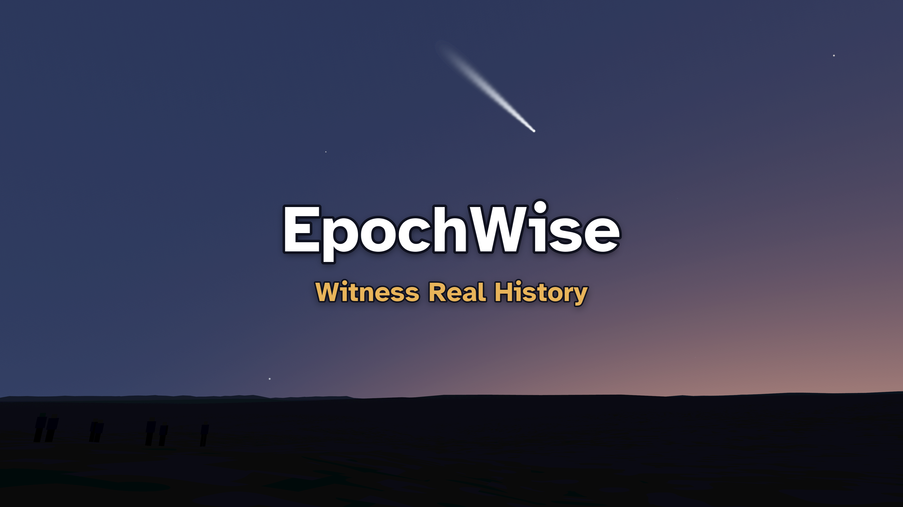
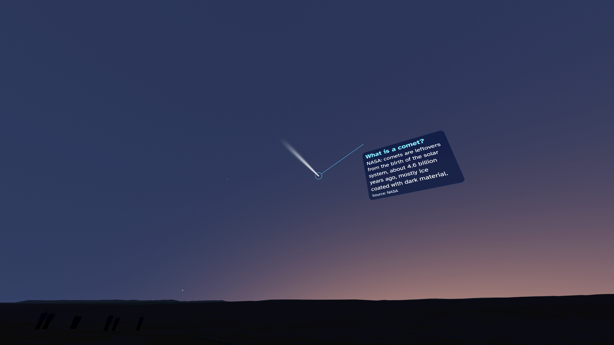
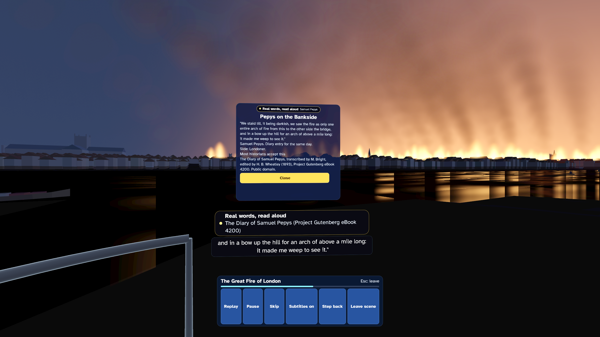
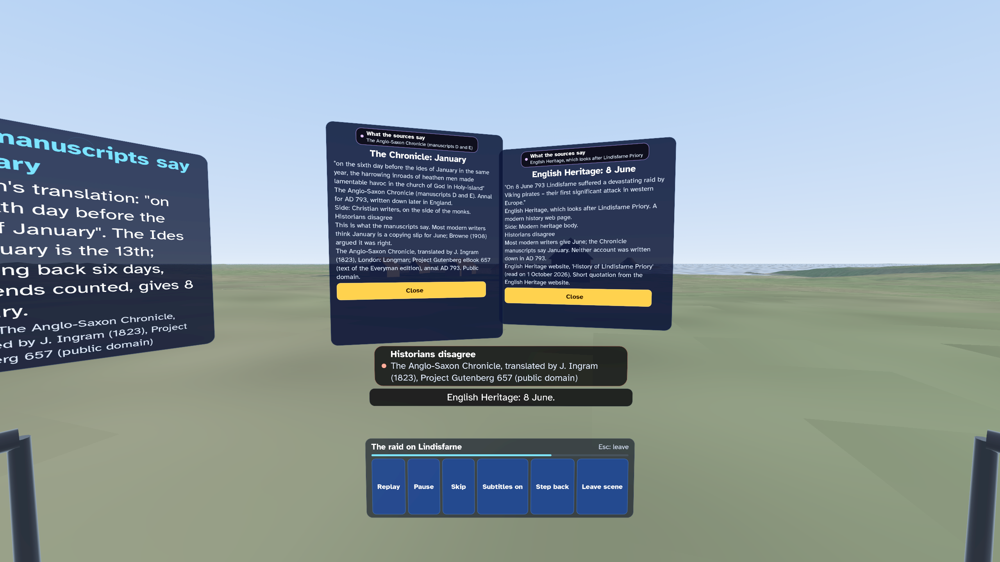

EpochWise: Witness Real History

A history app for learning: stand at real places at real moments, from Stonehenge and 1066 to the Moon landing. 45 scenes, most on the real land, under the sky computed for that date and place. Hear real words from the sources, read by a computer-generated voice. A label always says what is real, what is rebuilt and where historians disagree. You watch from a safe distance. Four reading depths. For ages 10 and up. No ads, no chat, no accounts, no in-app purchases and no personal data collected.
Get EpochWise on the Meta Horizon Store
At a glance
| Fact | Detail |
|---|---|
| Price | USD 3.99 in the US store. The store shows the price for your country. |
| Headset | Meta Quest 3 |
| Ages | For ages 10 and up. |
| Where it is sold | United Kingdom only |
| Internet | Not required to use the app |
| Mixed reality | No. The app is fully virtual. |
| Controls | Meta Quest Touch controllers |
| Players | Single player |
| Comfort | Comfortable |
| Language | English (UK) |
| Ads, chat and in-app purchases | None. The app collects no personal data. |
| Developer | dav3studios |
Stand where it happened
An educational, documentary history app. 45 scenes, from Skara Brae to the Moon landing and the opening of the Berlin Wall. Most stand on the real land, from survey data, under the sky computed for that date and place. Watch Halley's Comet over Sussex in 1066, or the Great Fire of London from the river with Samuel Pepys.
Real words, honest labels
Hear real words from chronicles, diaries, letters and broadcasts, read by a computer-generated British voice, with subtitles. A label always says what you see: a real place, a computed sky, a reconstruction from sources, or what the sources say. Where historians disagree, the app says so and shows each view. Facts name their sources.
A safe place to watch
You watch from a viewing spot, far from the action. Before every scene a short note says what it shows, with a choice to read it as text or to leave. Battles stay far away and nobody is shown hurt. "Leave scene" and "Step back" are always there.
Learn your way
Four reading depths, from Quick Look to Expert. Put events in order on the Timeline. Each scene ends with a question about its sources or dates. A finished scene earns a badge.
For families
Up to six explorers, pictures only, no names. Break reminders. A grown-up finds questions to talk about for each finished scene. An adult should supervise children's play. No ads, no chat, no accounts, no in-app purchases and no personal data collected. Plays offline.
Features
- 45 scenes from the Stone Age to 1989, each 6 to 9 minutes long
- Most scenes stand on the real land, made from survey data
- The sky, the Sun, the Moon and the stars computed for each date and place
- Real words from the sources, read by a computer-generated British voice, with subtitles
- Honesty labels on every scene, and "Historians disagree" where they do
- A short note before every scene, with "Read as text instead" and "Leave"
- "Leave scene" and "Step back" always in view
- Four reading depths, from Quick Look to Expert
- The Timeline: put events in order and see what led to each scene
- Questions for grown-ups to talk about, for each finished scene
- No ads, no chat, no accounts, no in-app purchases and no personal data collected
Pictures



More from dav3studios
- SpaceWise: The real solar system at its true size and in true time, with eight narrated journeys.
- BodyWise: A ride through the real human body, with blood cells at their real size.
- BeakerWise: 104 science experiments in biology, chemistry and physics on a virtual lab bench.
- GambitWise: Learn chess and Go one small step at a time, with a spoken coach. Free.
On this site
- Help and support
- Privacy policy
- Terms of use
- Credits: the people and works that the app uses, with their licences
EpochWise is made by dav3studios for Meta Quest. Get it on the Meta Horizon Store.